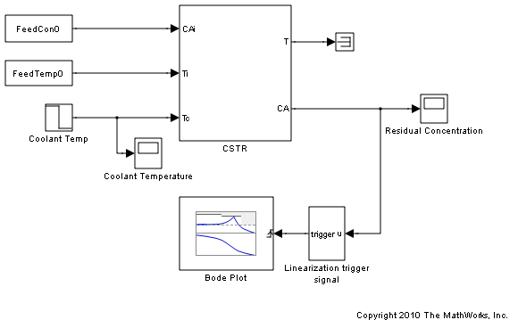
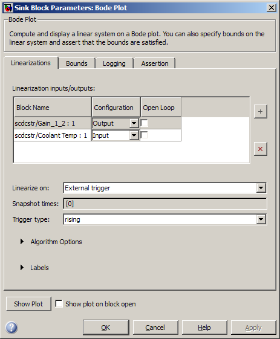
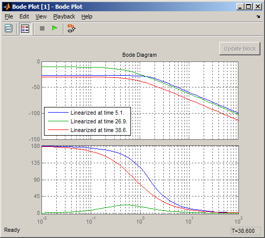
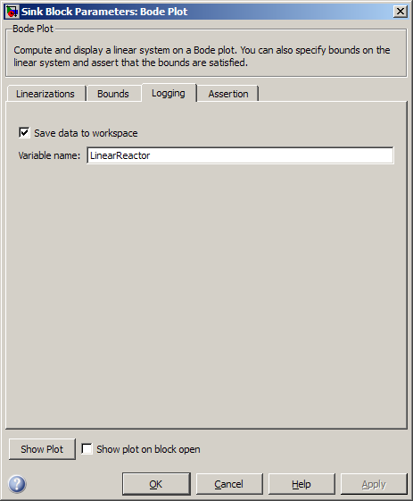

化学反応器の線形システム特性のプロット
Simulink® Control Design™ ソフトウェアには、シミュレーション中に線形システムを計算およびプロットするために Simulink® モデルに追加できるブロックが用意されています。このデモでは、連続攪拌化学反応器の線形システムが、反応器の異なる操作点間の遷移に従ってボード線図上に計算およびプロットされます。
目次
化学反応器モデル
化学反応器の Simulink モデルを以下のように開きます。
open_system('scdcstr')
 反応器には、3 つの入力と 2 つの出力があります。
- FeedCon0 ブロック、FeedTemp0 ブロック、および Coolant Temp ブロックは、入力であるフィード濃度、フィード温度、および冷却水温度のモデルをそれぞれ作成します。
- CSTR ブロックの T 端子と CA 端子は、出力である反応器温度と残差濃度のモデルをそれぞれ作成します。
このデモでは、フィード濃度とフィード温度が一定な場合の恒常冷却水温度 Coolant Temp から残差濃度 CA への応答について説明します。
反応器のモデル作成についての詳細は、Seborg, D.E. et al., "Process Dynamics and Control", 2nd Ed., Wiley, pp.34-36 を参照してください。
反応器線形応答のプロット
反応器モデルには、Simulink Control Design Linear Analysis Plots ライブラリにある Bode Plot ブロックが含まれています。ブロックは、以下のように設定されています。
- 冷却水温度 Coolant Temp での線形化入力
- 残差濃度 CA での線形化出力
このブロックは、外部トリガー信号の立ち上がりエッジ上で線形化を実行するようにも設定されています。トリガー信号は、Linearization trigger signal ブロックで計算されます。このブロックは、残差濃度が以下のような場合に立ち上がりエッジを生成します。
- 定常状態値 2 のとき
- 5 周辺の狭い範囲にあるとき
- 定常状態値 9 のとき
Bode Plot ブロックをダブルクリックすると、ブロックの設定が表示されます。

[ブロック パラメーター] ダイアログ ボックスの [プロットの表示] をクリックすると、[ボード線図] ウィンドウが開きます。このウィンドウには、Coolant Temp から CA への計算された線形システムの応答が表示されます。線形システムを計算し、その応答を表示するには、モデルを以下のいずれかの方法でシミュレーションします。
- [ボード線図] ウィンドウの [シミュレーションの開始] ボタンをクリックする。
- Simulink モデル ウィンドウで、[シミュレーション] > [スタート] を選択する。
- 次のコマンドを入力する。
sim('scdcstr')

ボード線図には、Linearization trigger signal ブロックで定義されたトリガー信号に対応する 3 つの操作点で線形化された反応器が表示されます。
- 5 秒での低残差濃度の線形化。
- 38 秒での高残差濃度の線形化。
- 27 秒での低残差濃度から高残差濃度への反応器の遷移に従った線形化。
低残差濃度と高残差濃度での線形化は類似していますが、遷移中の線形化には、大幅に異なる DC ゲイン特性と位相特性があります。低周波数では、位相の差異は、不安定な極またはゼロのいずれかの存在を示す 180°となります。
反応器線形応答のログ
Bode Plot ブロックの [ログ] タブでは、計算された線形システムがワークスペース変数に保存されるように指定できます。

線形システムは、time フィールドと values フィールドのある構造体にログされます。
LinearReactor
LinearReactor =
time: [3x1 double]
values: [4-D ss]
blockName: 'scdcstr/Bode Plot'
values フィールドは、線形システムを LTI 状態空間システムの配列として保存します (詳細は、Control System Toolbox ドキュメンテーションの「LTI モデルの配列」を参照してください)。
個別のシステムは、values フィールド内にインデックス化することで取得できます。
P1 = LinearReactor.values(:,:,1); P2 = LinearReactor.values(:,:,2); P3 = LinearReactor.values(:,:,3);
反応器が低残差濃度から高残差濃度に遷移中の 27 秒時点での線形システムのボード線図には、システムが不安定である可能性が示されています。極-零点形式の線形システムの表示は、以下のようにこれを裏づけます。
zpk(P1) zpk(P2) zpk(P3)
Zero/pole/gain from input "Coolant Temp" to output "Gain_1_2":
-0.1028
----------------------
(s^2 + 2.215s + 2.415)
Zero/pole/gain from input "Coolant Temp" to output "Gain_1_2":
-0.07514
---------------------
(s+0.7567) (s-0.3484)
Zero/pole/gain from input "Coolant Temp" to output "Gain_1_2":
-0.020462
---------------------
(s+0.8542) (s+0.7528)
Simulink モデルを閉じます。
bdclose('scdcstr') clear('LinearReactor','P1','P2','P3')